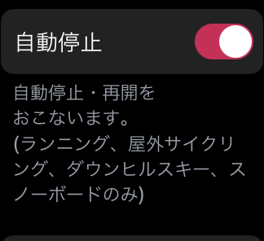

ヘルプ
Apple Watchアプリの設定
設定画面は、トップ画面の下部にある「設定」ボタンから表示ができます。

ゾーン通知
心拍ゾーンが変更したとき、通知音とHapticフィードバックでお知らせします。
通知を使わない場合は、スイッチをOFFにしてください。
自動停止
自動的に停止・再開が行われます。
例えば、ランニングの場合は、立ち止まると「停止」になり、再び動き始めると「再開」されます。
自動停止がONの場合、測定中に停止ボタンは表示されません。
この機能は、以下のアクティビティを選択した時のみ有効です。
- ランニング
- ダウンヒルスキー *1
- スノーボード *1
- サイクリング （室内以外）*2
*2: watchOS 8.0, Zones ver 5.0 以上の時のみ
押して一時停止
デジタルクラウンとサイドバーの同時に押すと、一時停止 もしくは 再開ができます。
腕立て伏せなどのように、誤って押してしまう可能性がある運動の場合は、スイッチをOFFにしてください。
（watchOS 8.0, Zones 5.0 以上の時のみ）
重要な測定項目
ワークアウト測定中画面で一番大きく表示する項目を変更できます。心拍数 と 運動強度 のいずれかを選択します。
（watchOS 8.0, Zones 5.0 以上の時のみ）
その他の設定
心拍ゾーン、単位、カスタムワークアウトは、iPhoneアプリで設定します。
iPhoneアプリの設定内容は、自動的にApple Watchに反映されます。
最新の内容が反映されていない場合は、iPhoneとApple Watchを通信できる状態にして、「同期する」をタップしてください。
iPhoneアプリをインストールしていない場合、「同期する」ボタンは表示されません。